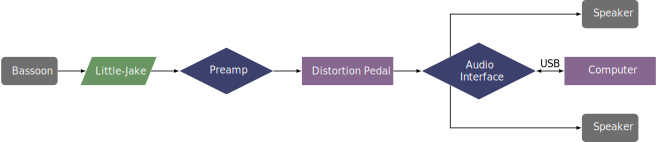

This piece was composed in 2019 for Joshua Hart. The premiere was on April 21, 2019, at Bowling Green State University. This piece has recently been revised. The piece can be obtained by contacting the composer at his website.
In the performance notes, Damann specifies a 2x2 interface, a MIDI footswitch, two speakers, and two large-diaphragm condenser microphones that should be aimed at the tenor joint and the boot joint. It also specifies that, where possible, the bassoon signal should be distorted before going into Max. The preferred method is a distortion stompbox, but a plug-in could also be used. However, a setup with an electric bocal would work very well going into a stompbox. Since the sound is being distorted, the tone difference between microphones and the pickup will be negligible.
The setup for this piece is shown below. 
An image of the Max patch on startup is shown in the screenshots section. From here, the menu labeled DSP on/off should be set to on to turn on the audio. There are levels for the bassoon, electronics, and master volumes. The patch can be advanced using a few different methods. One method is the spacebar, which would work best if someone else is running the patch. Another option is to use a Bluetooth page-turning pedal that is mapped to the right arrow key. The patch also listens for any MIDI controller value of 127.
The technical aspects of this piece are not too demanding, but it is fast. It calls for improvisation over a certain set of notes, but they are in a relatively easy range. This piece should be possible for many undergraduate students. The electronic part only triggers samples, which helps the performer line up the different improvisation sections.
Gnar Kill draws from the genre of progressive rock. There is a lot of "noise" in the electronics, and putting the bassoon through a distortion pedal creates even more. This piece is likely to appeal to younger audiences that are used to distorted guitar and that vein of popular music. Older audiences might not enjoy this piece to the same degree.
©2025 by Benjamin Bradshaw
Logo ©2025 by Hannah Bradshaw